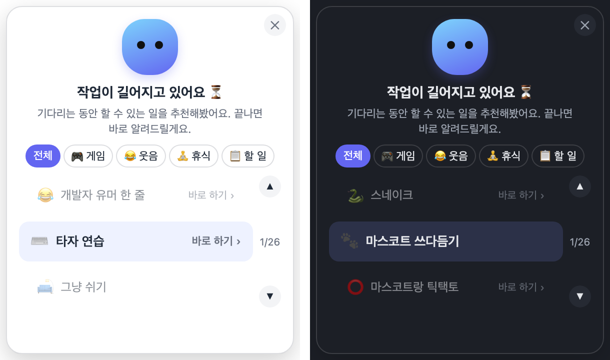
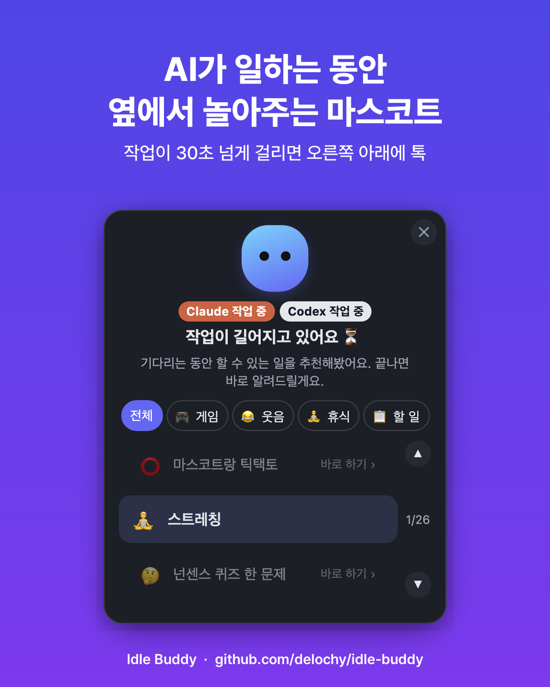
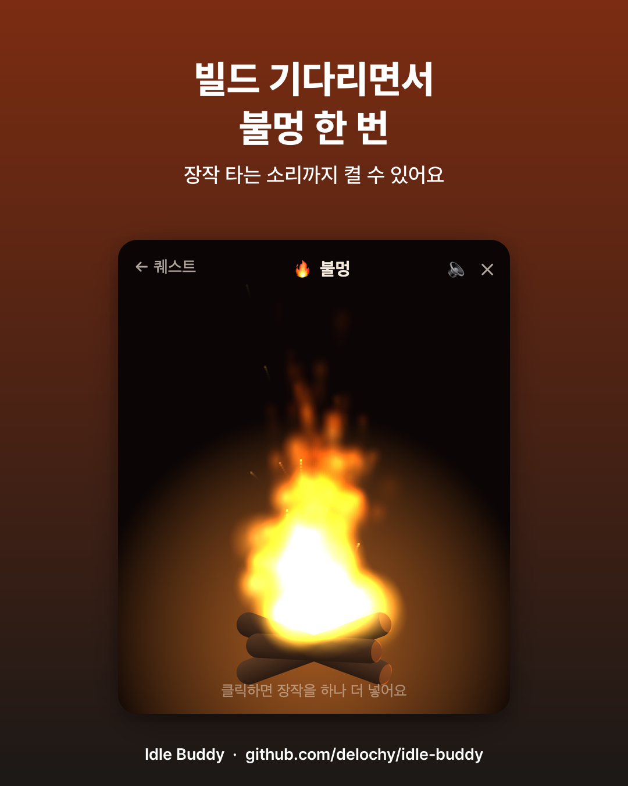
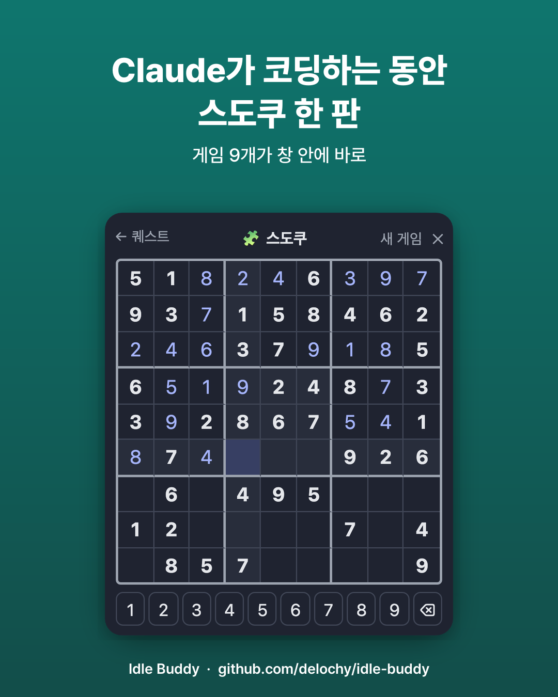
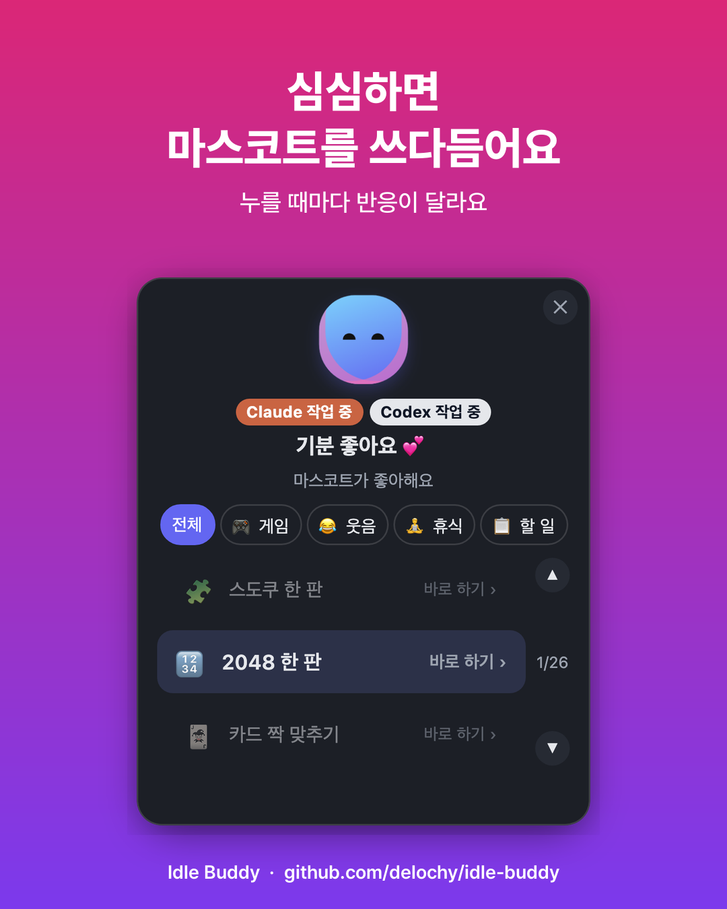

한국어 · English
macOS · Claude Code · Codex
Idle Buddy는 Claude Code나 Codex 작업이 30초 넘게 걸리면 화면 오른쪽 아래에 작은 마스코트를 띄워요. 기다리는 동안 할 만한 걸 추천하고, 작업이 끝나면 스르륵 사라집니다.





macOS와 Node.js 18 이상이 필요해요. Claude Code나 Codex 중 하나 이상을 쓰고 있어야 해요.
git clone https://github.com/delochy/idle-buddy.git
cd idle-buddy
sh install.sh설치 스크립트가 Claude Code와 Codex에 훅과 MCP 서버를 등록하고, 마스코트 앱을 ~/Applications에 설치해요. 바꾸는 설정 파일은 모두 백업본을 먼저 만들어요.
git pull && sh install.sh서버도 계정도 없어요. 기다린 시간, 경험치, 할 일 목록까지 전부 내 맥 안에만 저장돼요.
Claude Code나 Codex 작업이 30초 넘게 걸리면 화면 오른쪽 아래에 마스코트를 띄우는 macOS 위젯이에요. 기다리는 동안 게임·유머·휴식·할 일을 추천하고, 작업이 끝나면 알림음과 함께 사라집니다. 무료이고 MIT 라이선스예요.
지금은 macOS만 지원해요. 애플 실리콘과 인텔 모두 됩니다. 훅과 추천 페이지는 다른 OS에서도 돌지만 마스코트 창은 macOS 전용이에요.
네. 둘 중 하나만 있어도 동작해요. 둘 다 쓰면 창 하나에서 누가 작업 중인지 구분해 보여줘요.
macOS와 Node.js 18 이상이 필요해요. 저장소를 클론하고 install.sh를 실행하면 Claude Code와 Codex에 훅과 MCP 서버를 등록하고 마스코트 앱을 ~/Applications에 설치해요. Rust는 선택이고, 없으면 Releases의 빌드된 앱을 받습니다.
아니요. 서버도 계정도 없어요. 기다린 시간, 경험치, 할 일 목록까지 전부 data/ 폴더에만 저장되고 어디로도 전송되지 않아요. 타이핑 감지는 마지막 키 입력 시각만 보기 때문에 입력 모니터링 권한도 필요 없어요.
설치 후에는 실행 중이던 Claude Code나 Codex 세션을 새로 열어야 적용돼요. Codex는 첫 실행에서 훅을 한 번 신뢰해야 하는데, 터미널에서 codex를 실행하면 나오는 Hooks need review 화면에서 Trust all and continue를 고르면 됩니다.
Claude Code 기다리는 시간이 아까워서 맥 마스코트를 만들었다 — 타이핑 중엔 뜨지 않게 만든 방법, 남은 시간 숫자를 지운 이유, 자리를 뜨게 하는 추천을 뺀 이유.